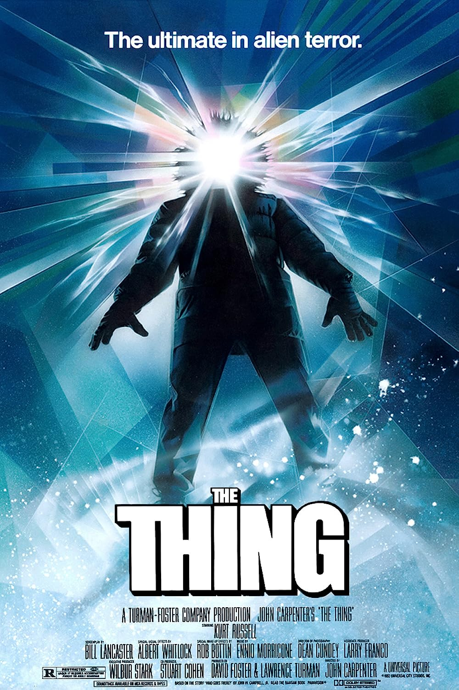

Favorite Books:
-
House of Leaves is not an enjoyable book to read in many ways. It's disjointed and at times outright confusing. The book itself features the maze-like conditions that various characters experience in their own stories - text is cut-off, upside down, or sometimes covered by other text or scans of images. It's a confounding read, but it is one of few books truly able to elicit the dread of being lost within something.

-
Remembrance of Earth's Past (Trilogy)
Remembrance of Earth's Past is a science fiction series by Chinese writer Liu Cixin. The series is also popularly referred to as Three-Body from part of the title of its first novel, The Three-Body Problem (Chinese: 三体; pinyin: Sān Tǐ; lit. 'Three-Body'). The series details humanity's discovery of and preparation for an alien invasion force from the planet Trisolaris.

Favorite Movies:
-
"The way I see it, if you're gonna build a time machine into a car, why not do it with some style?"
Best ever? Yes.

-
"How Long Were You Alone With That Dog?"
The Thing is a 1982 American science fiction horror film directed by John Carpenter about an unknown alien entity taking over a research base.

Favorite Activities:
-
"It's a real sport now, MOM."
Video games are fun. My gaming PC has long since been sold, but I might be able to squeeze out only an hour or so on my PS5 after the baby gets to bed these days. I'll be damned if I'm going to give up entirely.
-
...but snowboarding is better.
I used to do downhill-style longboarding, but these days it's just a casual form of exercise and transportation when the subway seems too stuffy.